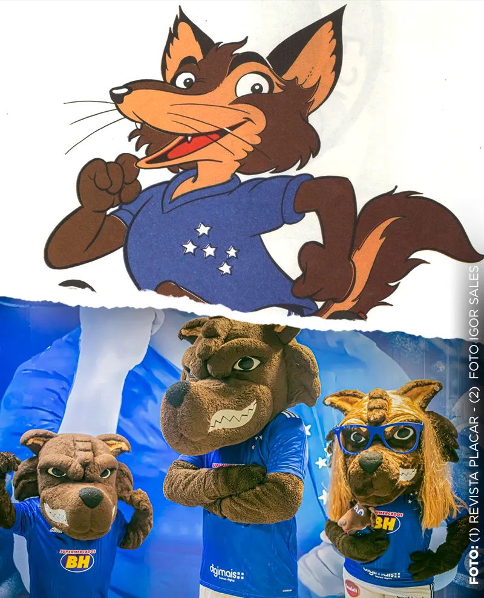
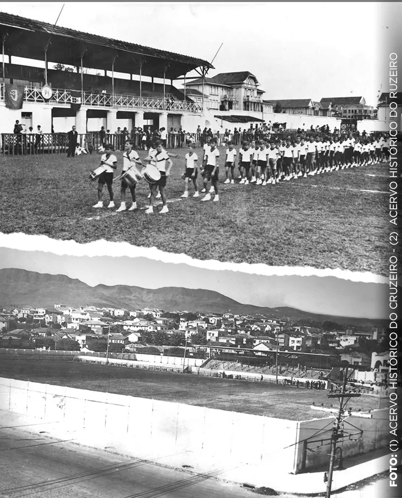
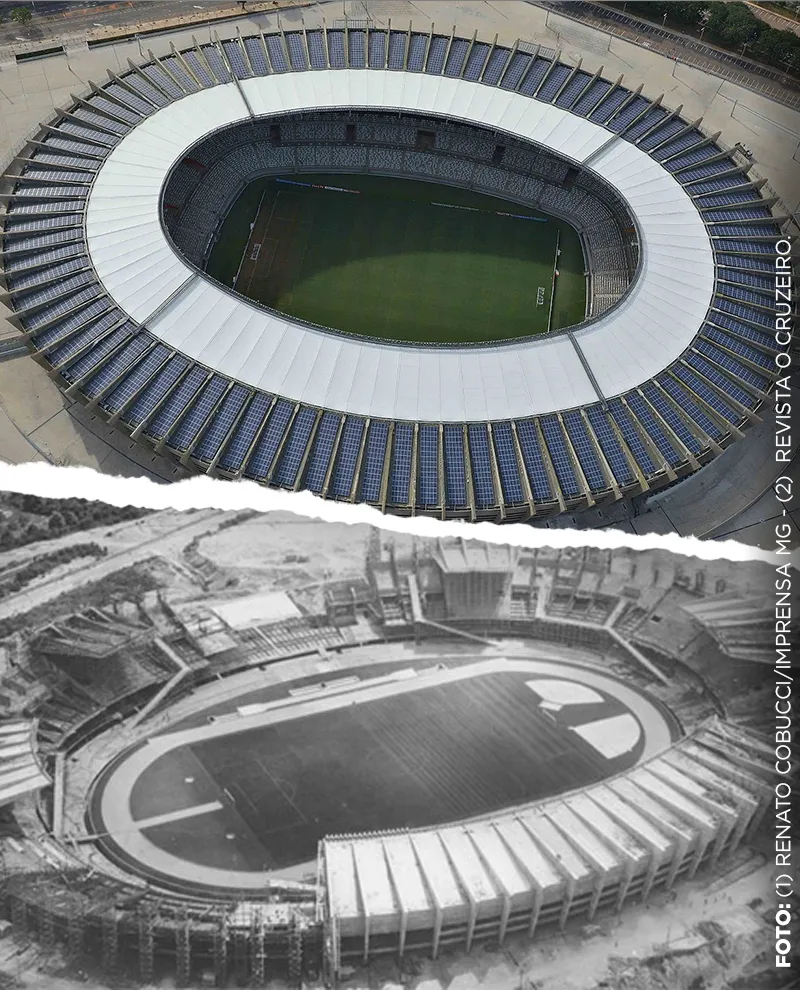
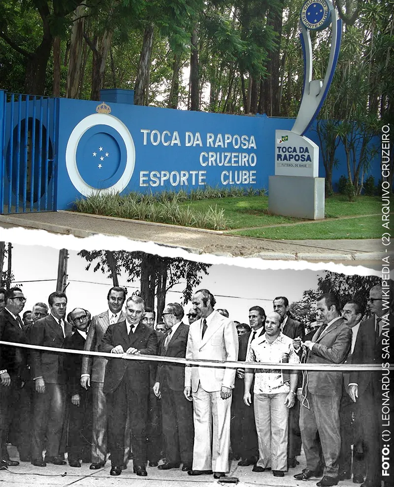
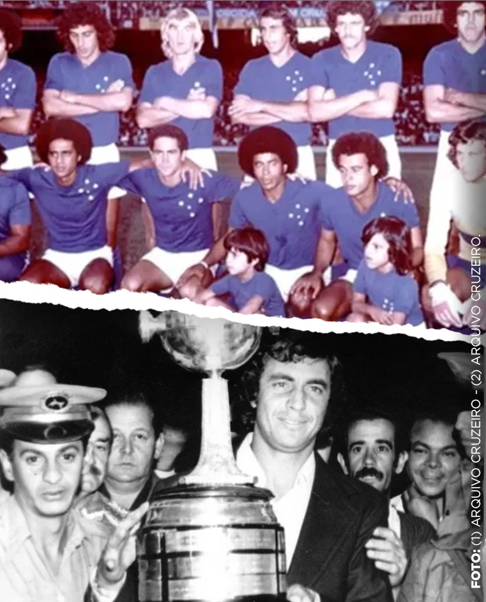
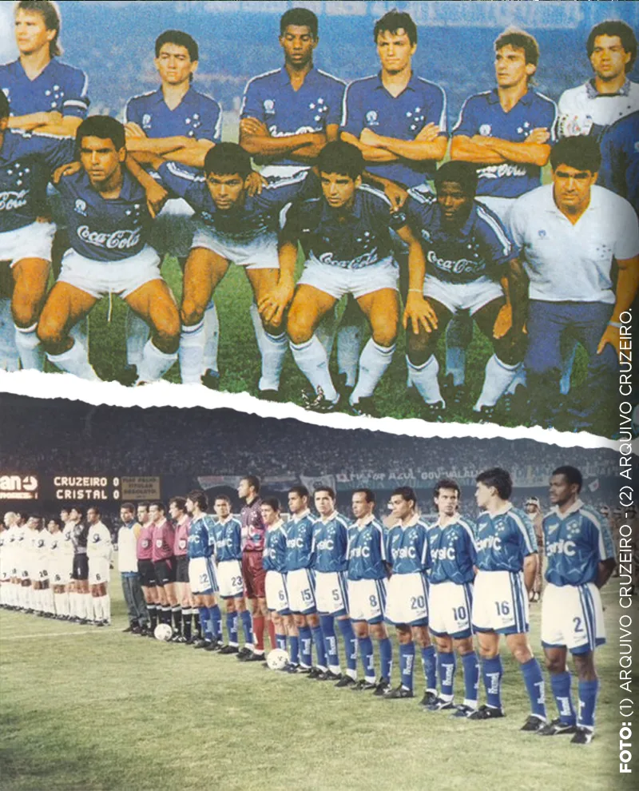
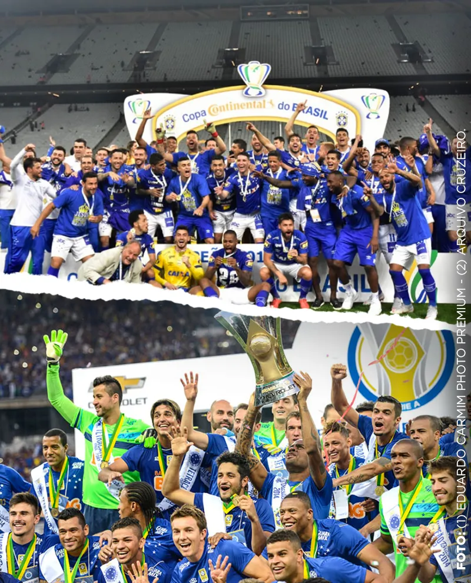

História do Maior de Minas
O PALESTRA ITÁLIA

A história do Cruzeiro Esporte Clube começou em 1921, quando foi
fundado por desportistas de uma
colônia italiana com o nome de Palestra Itália. As cores iniciais do clube eram as da bandeira
italiana: verde, vermelho e branco. No entanto, durante a Segunda Guerra Mundial, o governo proibiu
qualquer referência à Itália, levando o clube a mudar seu nome para Palestra Mineiro e suas cores
para azul e branco.
Após a mudança provisória, a diretoria do clube decidiu oficialmente
renomeá-lo como Cruzeiro
Esporte Clube, uma homenagem ao símbolo da pátria nacional. O uniforme celeste do Cruzeiro foi
estreado em 1943 em um amistoso contra o São Cristóvão - RJ, no dia 14 de fevereiro, e as cores azul
e branco passaram a representar o clube.
A RAPOSA, O FAMOSO MASCOTE DO CRUZEIRO
O cartunista Mangabeira criou os mascotes do Cruzeiro e do Atlético MG em 1945. A inspiração para o mascote da raposa veio do ex-presidente Mário Grosso, conhecido por antecipar contratações e tirar jogadores das mãos do Atlético MG, como se fosse uma verdadeira raposa. A ideia foi adotada pela torcida do Cruzeiro, que considera a raposa como símbolo do clube. Em 2003, com a conquista da tríplice coroa, o Cruzeiro trouxe a raposa para o campo, tornando-a um símbolo vivo que anima os torcedores e se torna cada vez mais querido pelos cruzeirenses.
A REFORMA DO ESTADINHO JK
O estádio Barro Preto foi construído em 1923, três anos após a fundação do Palestra Itália. Em 1945, passou por uma reforma significativa, com a instalação de bancos de cimento, vestiários e tribunas cobertas, aumentando a capacidade para 12 mil pessoas. O estádio foi renomeado como Juscelino Kubitschek em homenagem ao ex-presidente brasileiro, que era torcedor do Cruzeiro. O jogo de reinauguração ocorreu em 1º de julho contra o Botafogo, marcando também a estreia dos refletores no estádio.
O MINEIRÃO
O Mineirão foi um marco histórico não só para o Cruzeiro, mas também para o futebol em Minas Gerais, elevando o nível do esporte na região. O primeiro jogo no estádio ocorreu na final do Campeonato Mineiro de 1965, que resultou em uma vitória tensa e cheia de confusões, garantindo mais um título para o Cruzeiro. O estádio foi fundamental para o clube, que conquistou cinco campeonatos mineiros consecutivos de 1965 a 1969 e o título da Taça Brasil (Campeonato Brasileiro) ao derrotar o Santos de Pelé.
O HINO DO CRUZEIRO
O hino cruzeirense foi composto pelo maestro Jair Ambrósio em 1965. O hino possui 80 palavras, distribuída em 16 frases. O compositor levou 15 minutos para compor a canção, e logo a foi aprovado pela diretoria cruzeirense.
A TOCA DA RAPOSA
A Toca da Raposa foi construída em 1963, foi primeiro centro de treinamento exclusivo de um clube de futebol no Brasil.
1976 - A PRIMEIRA LIBERTADORES DO CRUZEIRO
 O ano de 1976 foi marcante para o Cruzeiro com a conquista da sua
primeira Libertadores da América. A final foi disputada contra o River Plate da Argentina em uma
série de três jogos. O Cruzeiro venceu a primeira partida no Mineirão por 4x1, mas perdeu o segundo
jogo no Monumental de Núñez por 2x1. O terceiro jogo, disputado no Chile, ficou marcado pelo
inesquecível gol de Joãozinho aos 88 minutos, garantindo o título para o Cruzeiro.
Nesse ano, o clube também enfrentou a triste perda do atacante Roberto
Batata em um acidente de carro. No entanto, essa tragédia serviu como motivação para os jogadores e
fortaleceu a equipe na campanha vitoriosa da Libertadores.
DÉCADA DE OURO: TÍTULO DO CRUZEIRO NOS ANOS 90
Após a geração de 80 não levar tantos títulos para Raposa, a década seguinte veio para colocar o Cruzeiro em outro patamar no futebol Brasileiro. A boa fase do clube percorreu até o começo dos anos 2000, foram impressionantes 15 anos vencendo pelo menos um título por ano (1990-2004).
A TRÍPLICE COROA DO CRUZEIRO

AEm 2003, o Cruzeiro, sob o comando de Vanderlei Luxemburgo, alcançou
um feito histórico conquistando a tríplice coroa: o Campeonato Mineiro, a Copa do Brasil e o
Campeonato Brasileiro de pontos corridos. No Campeonato Mineiro, o destaque foi o clássico contra o
Atlético MG, vencido pelo Cruzeiro por 4x2, com uma grande atuação de Alex, que marcou dois gols e
deu duas assistências.
Na Copa do Brasil, o Cruzeiro enfrentou o Flamengo na final e venceu,
com um show do trio Alex, Deivid e Aristizábal. O Brasileirão de 2003 foi marcado por uma campanha
inesquecível do Cruzeiro, com 100 pontos, 72,5% de aproveitamento e 31 vitórias em 46 jogos. Alex
foi o artilheiro com 23 gols, seguido por Aristizábal com 21 gols. O último jogo do Campeonato
Brasileiro contra o Paysandu terminou em vitória por 2x1, garantindo o título e a tríplice coroa
para o Cruzeiro.
UMA NOVA ERA DE UM CRUZEIRO VITORIOSO
 A geração de 2010 fez o Cruzeiro ser um time vitorioso novamente.
Foram quatro campeonatos Mineiro, dois Brasileiros e duas Copas do Brasil, tornando-se o maior
campão do torneio.
O que fez a Raposa ser um time vitorioso, foi a consistência técnica.
Dificilmente o clube perdia
pontos em times abaixo na tabela e ter opções no banco em todas as competições.